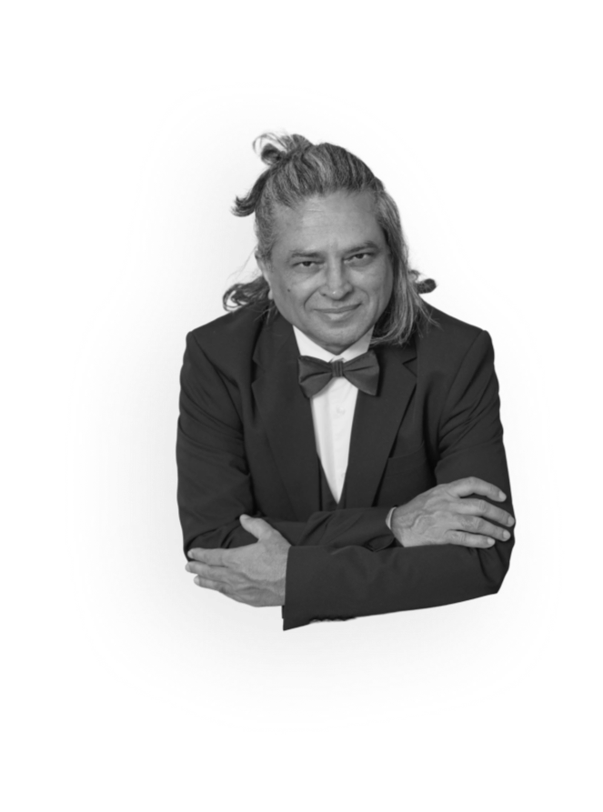

Nalin Kumar Pandya
writer, director, and producer
Nalin Kumar Pandya, known to audiences as Pan Nalin, was born in Adtala, a village in the Amreli district of Saurashtra, Gujarat. His father ran a tea stall at a small railway junction, a station he would later describe as nobody’s destination, and much of his childhood was spent on its platforms, watching trains cross the open fields. He didn’t see a film until he was about eight. By then he had already been asking his parents where light comes from, and where it goes at night.
He never let go of that question. He studied fine art at M.S. University in Baroda and design at NID Ahmedabad, where he ran the film club. He shot some fifty wedding videos to pay his way, and made animations and silent shorts on old cameras found at Ahmedabad’s Sunday flea market. Documentaries for Discovery, Canal+ and the BBC took him across India and into the Himalayas.
His first feature, Samsara (2001), followed a young monk torn between desire and devotion, and travelled to audiences around the world. Valley of Flowers moved from Himalayan myth to modern Tokyo. Faith Connections captured the Kumbh Mela, the largest gathering of people on earth. Angry Indian Goddesses, called India’s first female buddy film, won over audiences in Toronto and Rome.
With Last Film Show (2021), he finally turned the camera on his own childhood: a boy at a railway station who falls in love with the light of a projector. The film became India’s official entry to the Academy Awards and won the National Film Award for Best Gujarati Film.
Through his company, Monsoon Films, he continues to make films about seekers, and about the light that leads them.